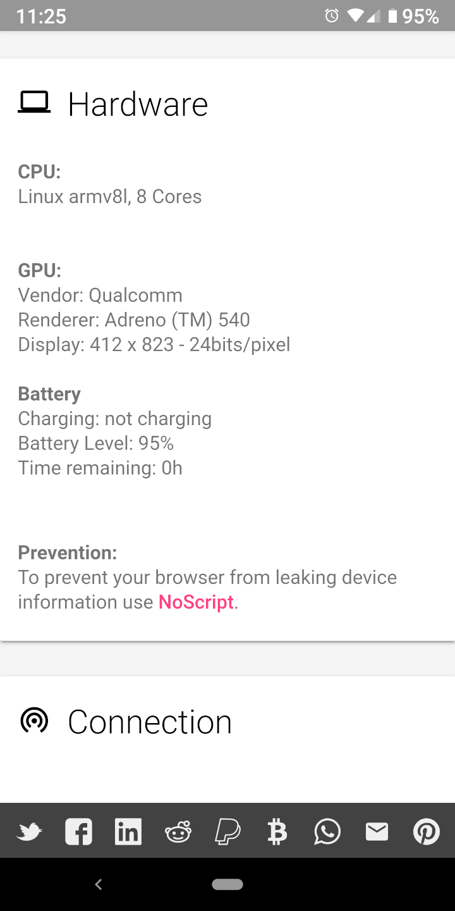

JavaScript Est Puissant JavaScript Est Puissant
JavaScript Est Puissant JavaScript Est PuissantAu début de l'internet, les pages Web étaient statiques, c'est-à-dire qu'elles contenaient du texte et des images qui étaient affichées à l'écran mais qui ne changeaient pas et n'interagissaient pas avec l'utilisateur. Bien entendu, seul un contenu intéressant peut arriver avec du contenu statique. Plusieurs technologies différentes ont été développées pour faciliter les pages Web dynamiques. JavaScript est l'une de ces technologies.
JavaScript est un langage de programmation. De nombreux serveurs Web hébergent des programmes écrits en JavaScript, qui sont envoyés aux périphériques dans le cadre de la page Web. L'appareil exécute le code JavaScript sur son processeur local et suit les commandes du programme, qui peut animer des images sur le site Web, afficher un menu et bien d'autres choses utiles.
 JavaScript Est Dangereux
JavaScript Est DangereuxBien entendu, le concept d'exécution de programmes arbitraires à partir d'un site Web est potentiellement dangereux. Par conséquent, JavaScript est limité pour l'empêcher d'effectuer des opérations telles que l'installation de virus. Cependant, il s'avère que ces limitations sont trop larges. Vous trouverez ci-dessous une capture d'écran de Webkay, un site Web présentant le type d'informations que JavaScript peut générer à propos d'un appareil. Les fuites du navigateur sont une autre bonne ressource.

Pour des raisons de confidentialité, l'idéal serait de naviguer sur Internet avec JavaScript désactivé.
Cependant, certains sites Web nécessitent légitimement l'utilisation de JavaScript pour atteindre leurs objectifs.
Et d'autres qui ne fonctionnent pas correctement sans JavaScript même s'ils peuvent être programmés pour le faire.
Privacy Browser résout ce problème en facilitant l'activation et la désactivation de JavaScript.
Tapez sur le bouclier de confidentialité pour le basculer entre le bleu
ou le jaune  (les deux indiquent que JavaScript est désactivé) et red (activé par JavaScript).
Voir les différentes informations que Webkay peut collecter avec JavaScript activé et désactivé est informatif.
(les deux indiquent que JavaScript est désactivé) et red (activé par JavaScript).
Voir les différentes informations que Webkay peut collecter avec JavaScript activé et désactivé est informatif.
Naviguer sur Internet avec JavaScript désactivé, et ne l'activer que si nécessaire, contribue grandement à la protection de la vie privée. En outre, JavaScript est utilisé pour charger une grande partie des publicités gênantes et des informations supplémentaires fournies par la plupart des sites Web modernes. Lorsque cette fonctionnalité est désactivée, les sites Web se chargent plus rapidement, utilisent moins de trafic réseau et consomment moins de puissance du processeur, ce qui allonge la durée de vie de la batterie.